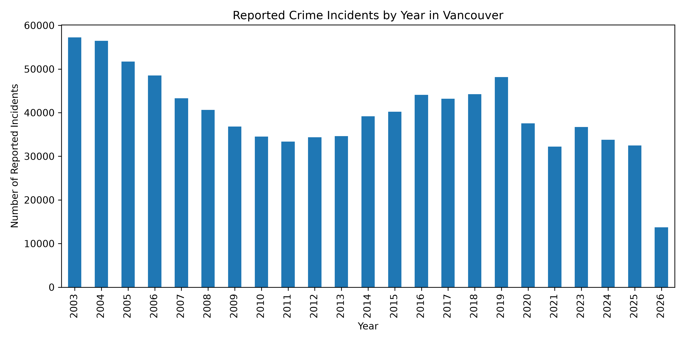
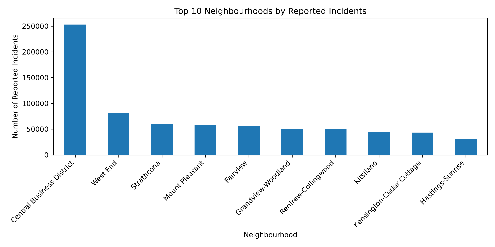
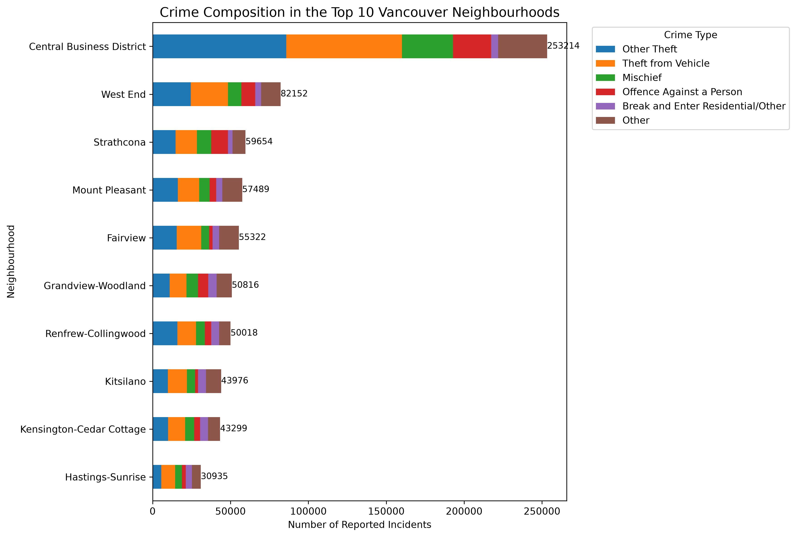

Ongoing project
Vancouver Crime Analytics
Exploring Vancouver open crime data to compare neighbourhoods, offence mix, and trends over time.
Overview
Vancouver publishes open data on reported crime incidents across neighbourhoods and years. I am building a Python analysis workflow to clean that dataset and summarize how incident volumes and offence types vary across the city. The project is still in progress: core cleaning and initial EDA exist, with more questions planned.
What I Did
- Imported and cleaned the city’s neighbourhood-level crime CSV into an analysis-ready table.
- Built Jupyter notebooks for data preparation and exploratory analysis.
- Produced matplotlib charts for yearly totals, top neighbourhoods, and offence composition.
- Started a follow-up view of crime-type percentages within each high-volume neighbourhood.
Key Results & Outputs
- Bar charts of reported incidents by year and the top ten neighbourhoods by volume.
- Stacked composition charts for the busiest neighbourhoods (counts and percentage views).
- Early notebook notes: theft-related offences (including theft from vehicle and other theft) are common across the top neighbourhoods; “Offence Against A Person” also appears among the most frequent types in that group.



Technical Approach
Raw open data is stored under data/raw, cleaned to
data/processed/vancouver_crime_clean.csv, and analyzed in Jupyter with pandas
groupbys and matplotlib. Figures are exported to results/figures/ so notebooks
stay readable and outputs can be reused in write-ups like this page.
Challenge / What I Learned
Categorical fields such as neighbourhood and offence type need consistent levels before aggregation; otherwise charts look plausible but combine incompatible labels. Building the clean dataset first made the EDA notebooks much easier to extend.